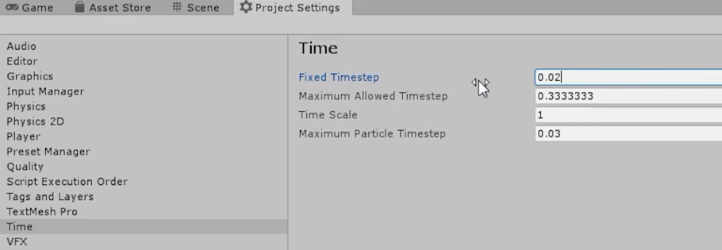

用处
实现稳定的时间步长。
结构
将每一帧里对象的运动速度与该帧的渲染时间相乘，就可以抵消在不同运行环境下因为帧率而造成的数据差异。
class Timestep
{
public:
Timestep(float time = 0.0f)
: m_Time(time)
{
}
operator float() const { return m_Time; }
float GetSeconds() const { return m_Time; }
float GetMilliseconds() const { return m_Time * 1000.0f; }
private:
float m_Time;
};
补充知识
三种 Timestep 系统
Fixed delta time
double t = 0.0;
double dt = 1.0 / 60.0;
while (!quit)
{
integrate(state, t, dt);
render(state);
t += dt;
}
这种代码一般是启用 VSync 时调用的，因为此时已经知道调用渲染 Loop 的频率，比如这里显示器是 60 的帧率，就可以直接这么写。
但这样写也不太好，因为它存在一个问题：如果 CPU 渲染的频率跟不上显示器的频率，那么这里的函数一秒就不能跑到 60 次，游戏里的逻辑就会变慢。而且如果没开 VSync，也会有问题。
Variable delta time
具体如上。
不过这种方法，如果机器很差的话，帧与帧之间的 delta time 不仅可能会很大，而且每帧的 delta time 都是不同的。
而对于物理模拟的系统来说，需要的是稳定不变，且较小的 delta time，只有这样，才能平滑的计算物理之间的变化。
Semi-fixed timestep
类似于 Unity 的 FixedUpdate 函数，Unity 里的 Update 函数是每帧执行一次的函数，而 FixedUpdate 每帧可以执行任意多的次数，这取决于 Unity 的 time 相关的设置与游戏里实际的 framerate，如下图所示。

FixedUpdate is used when you need to have something persistently cleanly applying at the same rate, and that’s usually physics, because physics needs to calculate stuff using time as an actual parameter.
初步思路是，当一帧所用时长，即 DeltaTime 大于规定的每帧的最大值时，在该帧多次处理 DeltaTime，类似于补帧操作，把 DeltaTime 细化为多个更小的 DeltaTime，相关代码如下：
double t = 0.0;
double dt = 1 / 60.0;// 这是一个常量, 代表delta time的最大值
double currentTime = hires_time_in_seconds();
while (!quit)
{
// 获取上一帧到这里的delta time
double newTime = hires_time_in_seconds();
double frameTime = newTime - currentTime;
currentTime = newTime;
// 注意这里的循环, 当frameTime大于1/60时, 这里会额外跑几次这个循环
// 它相当于把frameTime细分为了多个Timestep, 但都在这一帧内执行
while (frameTime > 0.0)
{
float deltaTime = min(frameTime, dt);// delta time不允许超过1/60
//
integrate(state, t, deltaTime);
frameTime -= deltaTime;
// t应该是真实的当前经历的时间
t += deltaTime;
}
render(state);
}
这样写也会有一个缺点，如果这里的 Integrate 里的内容 CPU 消耗很高的话，容易陷入 Spiral Of Death，翻译过来就是循环死亡。
举个例子，当前面代码的 integrate 函数，无法在给它分配的 frameTime里完成时，就会陷入无尽的循环